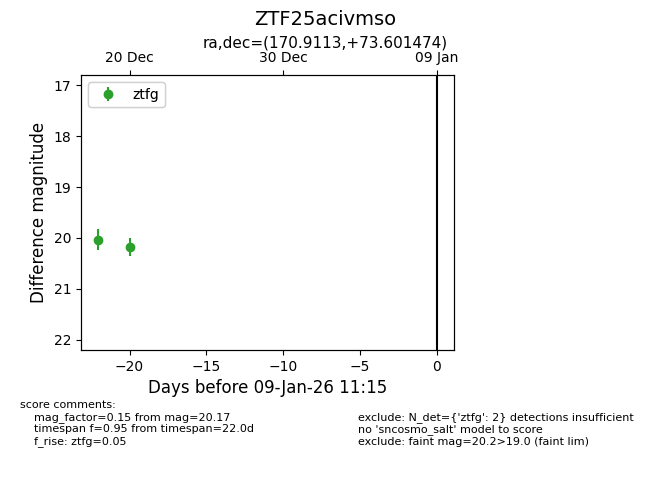
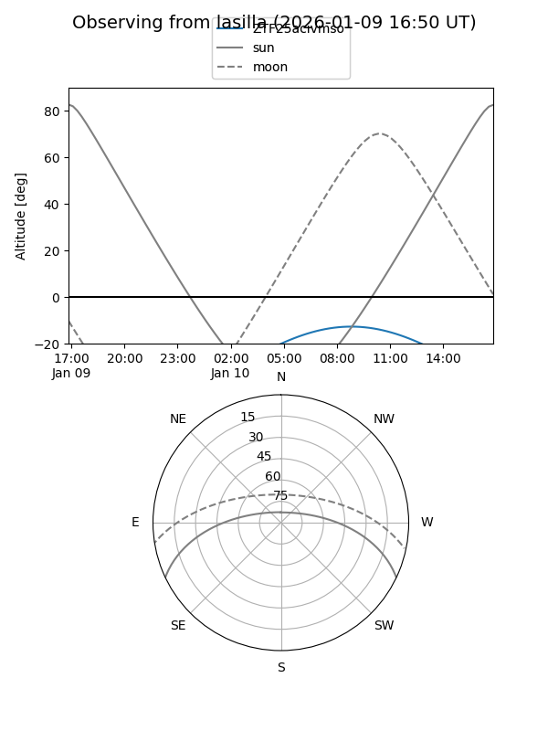
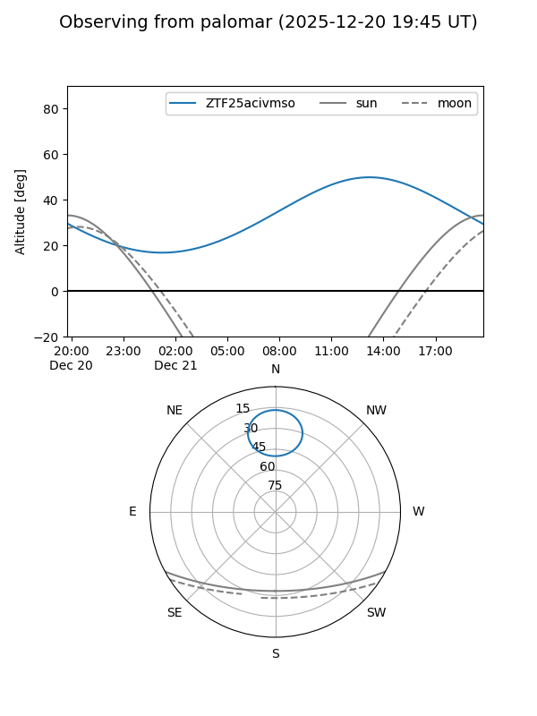

ZTF25acivmso
Target ZTF25acivmso at 2025-12-31 18:00
Aliases and brokers:
FINK: link
Lasair: link
ALeRCE: link
alt names
ZTF25acivmso (ztf,fink_ztf)
Coordinates:
equatorial (ra, dec) = 170.9113,+73.60147
equatorial (HMS+DMS) = 11:23:38.71,+73:36:05.30
galactic (l, b) = (131.1086,+42.10434)
Flags:
Photometry:
last ztfg=20.17
2 ztfg detections
Lightcurve

Visibility


Additional plots